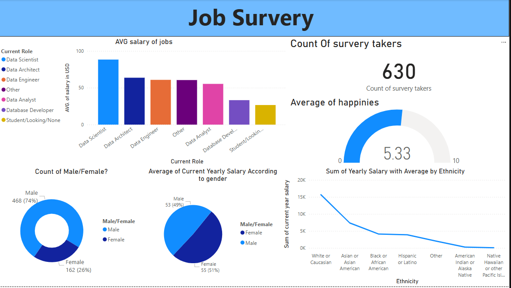

Job Survey
It is PowerBI dashboard to show insights of survey done in jobs related to data field and show the happiness of people from survey and salries in this field and whoparticipate in this survey.
As we see ot i ssurvey about the jobs in data fields we see the count of the survey takers and plot how many avg salary in USD for data fields and count the genders male and female and Average of count yearly salary according to gender and sum of salary average by Ethnicity.